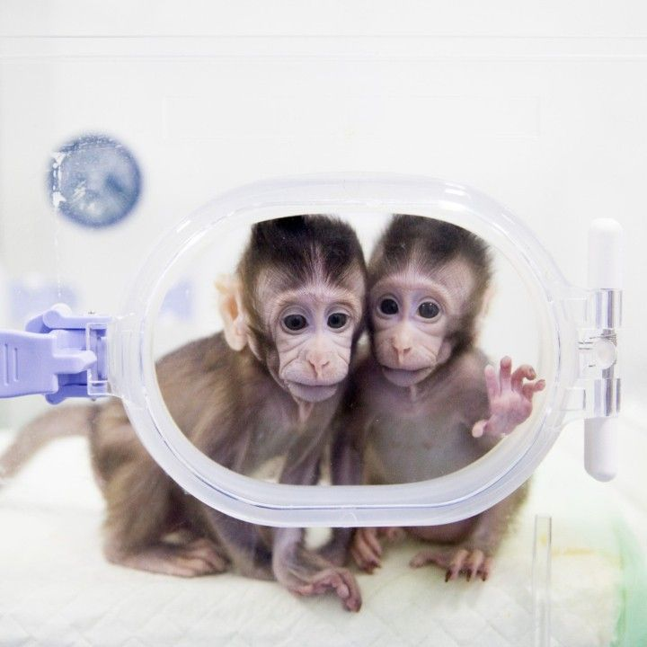

Deux singes clonés sont nés en Chine : une prouesse scientifique qui pose des questions éthiques
Deux jeunes macaques ont été créés grâce à un clonage utilisant la même technique que pour la brebis Dolly.
Les chercheurs chinois espèrent pourvoir les utiliser pour la recherche médicale.
Ils s’appellent Zhong Zhong et Hua Hua, ils ont respectivement huit et six semaines… Et ils sont « nés » d’un clonage,
à l’Institut des neurosciences de l’Académie chinoise des sciences (CAS), à Shanghaï.
Ces deux macaques crabiers ont été créés grâce à la méthode utilisée en 1996 pour la brebis Dolly, le premier mammifère cloné.
CLONAGE SOMATIQUE
Ils racontent leurs techniques dans un article publié dans la revue scientifique Cell.
Il s’agit d’un clonage par transfert nucléaire de cellules somatiques (SCNT) :
on prélève d’abord une cellule contenant l’ADN sur un macaque adulte. La cellule est implantée dans un ovocyte non fécondé,
prélevé sur un autre macaque adulte. Le noyau de cet ovocyte a été retiré, il a donc été débarrassé de ses informations génétiques.
Une fois le transfert effectué, le couple cellule-ovocyte est soumis à un très petit choc électrique, qui les fusionne.
L’embryon ainsi obtenu est transféré dans l’utérus de la mère porteuse. Le nouveau-né aura le même ADN que le premier macaque adulte.
Ce n’est pas la première fois que des primates ont été clonés : en 1999 naissait le macaque réshus Tetra,
créé par une méthode plus limitée, la division de l’embryon. Mais le clonage somatique,
qui est utilisé depuis Dolly sur une vingtaine d’espèces animales, était plus compliqué avec les primates :
c’est le premier succès de cette méthode avec des singes. Les chercheurs ont réalisé le transfert très rapidement,
et surtout ont prélevé, cette fois-ci, la cellule contenant l’ADN dans le tissu fœtal.
Ces cellules peuvent être cultivées dans un laboratoires, ce qui permet plus de clonage.
DEUX RÉUSSITES SUR 79 EMBRYONS
Les scientifiques chinois ont travaillé pendant trois ans sur le clonage somatique avant que cela fonctionne,
et les deux bébés macaques sont pour l’instant en très bonne santé. Mais l’équipe de chercheurs a connu plusieurs échecs avant de réussir :
seules deux réussites… sur 79 embryons créés à partir d’une cellule du foetus.
Ils ont par ailleurs aussi tenté de cloner des singes à partir de cellules issues d’adultes :
deux clones sont nés sur 181 embryons, et tous deux sont morts de difficultés respiratoires au bout de 30 heures.
L’expérience requiert donc de nombreux animaux : les scientifiques chinois ont utilisé des douzaines de mères porteuses pour réaliser cette étude,
chacune coûtant environ 50 000 dollars. Coûteuse, et complexe techniquement, cette méthode de clonage est difficile à mettre en place.
Mais les chercheurs chinois espèrent tout de même que leur technique de clonage va pouvoir être réutilisée,
d’abord pour étudier la structure biologique des primates, mais aussi pour faire avancer la recherche médicale.
Ils ont en effet souligné dans leur étude les avantages d’avoir un groupe de singes génétiquement identiques.
Les primates non humains sont très utilisés dans la recherche médicale, pour étudier des maladies et tester des médicaments.
Mais les différences génétiques peuvent fausser les résultats… Différences qui n’existent pas lors d’un clonage.
« En travaillant sur un petit groupe d’animaux génétiquement semblables, il est possible de tester beaucoup plus rapidement de nouvelles molécules »,
a ainsi expliqué à l’AFP Mu-ming Poo, directeur de l’Institut des neurosciences de la CAS.
Pour lui, les laboratoires pourront également « tester l’efficacité de traitements expérimentaux avant de mener des essais cliniques ».
LES LABORATOIRES POURRONT ÉGALEMENT TESTER L’EFFICACITÉ DE TRAITEMENTS EXPÉRIMENTAUX AVANT DE MENER DES ESSAIS CLINIQUES
QUESTIONS ÉTHIQUES
On pourrait même aller plus loin : comme le rappelle The Verge, grâce aux techniques actuelles, notamment l’éditeur de gènes CRISPR,
il serait très facile de modifier l’ADN de ces singes clonés afin d’étudier les effets des gènes dans des maladies comme Parkinson,
Alzheimer ou Huntington.
Mais ce type de manipulation ne peut pas être envisagé sans considérations éthiques.
Cette étude a déjà entraîné la mort de nombreux êtres vivants avant d’obtenir deux macaques vivants.
Et la création d’un « troupeau » de macaques clonés pour que l’on puisse leur inculquer des maladies neurodégénératives pose des questions
sérieuses sur ce que l’on est prêt à faire vivre aux animaux au nom de la recherche scientifique.
Par ailleurs, les scientifiques chinois ont conscience que leurs travaux risquent de susciter de nouvelles inquiétudes sur le clonage humain.
« On peut, en principe, cloner des humains », a précisé Mu-ming Poo. « Je pense que personne ne veut cloner des êtres humains,
la société ne le permettrait pas » mais « une fois qu’une nouvelle technique apparaît, le risque d’une mauvaise utilisation existe »,
a-t-il reconnu.